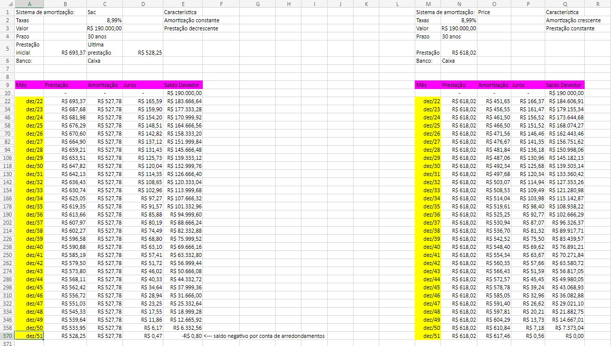
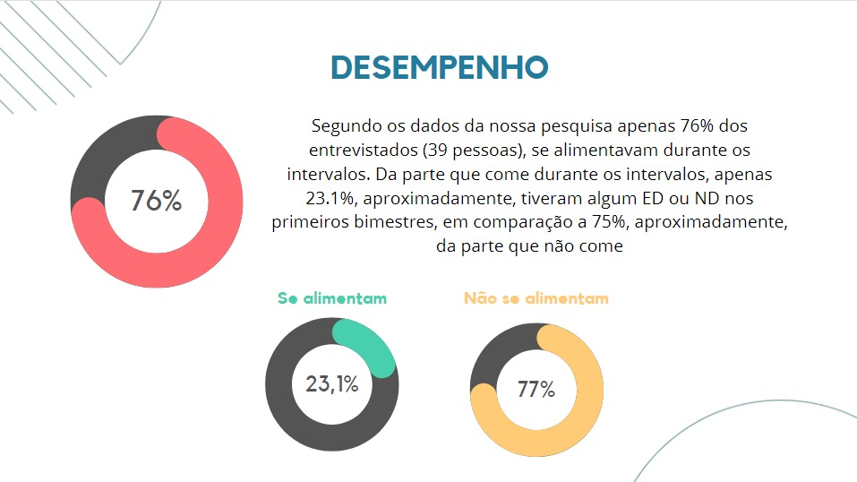

Como atividade do segundo ano de matemática escolhi a tarefa que tínhamos que inicialmente criar uma planilha de planejamento financeiro de uma família, e ao decorrer do desenvolvimento da atividade mais imprevistos e gastos apareciam e tínhamos que nos adaptar e continuar com o planejamento. Até um certo momento que a família compraria um imóvel e usaríamos outros métodos como sistema de armotização SAC ou Prize e suas características.
Devo admitir que este trabalho foi bem difícil de ser realizado, mas foi de extrema importância afinal são situações futuras que vou enfrentar e devo saber como lidar com elas, além de se tratar da educação financeira que é uma máteria que deveria ser essencial nos ensinos do Brasil.

A atividade do terceiro ano que escolhi foi uma tarefa em grupo que se tratava de estastísticas, então ao decorrer da atividade tivemos que pensar sobre o que iríamos falar e qual era nosso objetivo. Depois de escolhermos o tema que seria: como é a alimentação durante os períodos de aula no Senac. Teríamos que fazer perguntas para deselvolver uma pesquisa e ao final apresentar os dados obtidos e nossas conclusões com base nos mesmos.
Eu me diverti bastante deselvolvendo esta atividade pois consegui dialogar muito bem com meu grupo sobre nosso intuito com a pesquisa e como realizaríamos cada etapa do projeto, além de abordar a alimentação sendo um tema bastante importante para o desempenho dos alunos da escola.